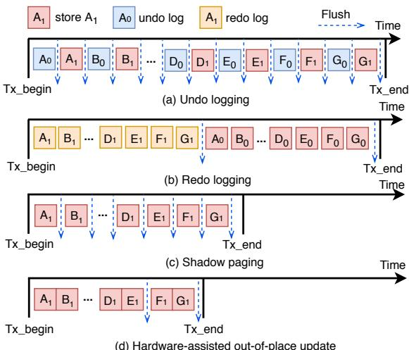

HOOP: Efficient Hardware-Assisted Out-of-Place Update for Non-Volatile Memory 通俗讲解¶
0. 整体创新点通俗解读¶
痛点直击 (The "Why") - 传统的 NVM（非易失性内存）持久化方案，比如 logging (日志) 和 shadow paging (影子分页)，都陷入了两难困境。 - Logging 方案（无论是 undo 还是 redo）为了保证崩溃一致性，必须为每次数据更新额外写一份日志到 NVM。这直接导致了 2倍甚至更高的写放大 (write amplification)，不仅拖慢了性能，还严重损耗了 NVM 的物理寿命。 - Shadow Paging 虽然避免了日志的额外写入，但它采用 copy-on-write (CoW) 机制。即使只改了一个字节，也得把整个页面（或缓存行）复制一份。这同样造成了巨大的、不必要的写放大，并且在关键路径上引入了昂贵的数据拷贝开销。 - 更糟糕的是，这些方案通常还需要在程序的关键执行路径上插入大量的 cache flush (缓存刷新) 和 memory fence (内存屏障) 指令来保证持久化顺序，这直接扼杀了应用的关键路径延迟 (critical-path latency)。
通俗比方 (The Analogy) 想象你要修改一份极其重要的纸质合同（代表 NVM 中的数据），这份合同一旦损坏就必须能恢复到一个一致的状态。 - Logging 就像你先复印一份旧合同（写日志），然后在原件上涂改。如果涂改到一半停电了，你可以用复印件恢复。但复印和涂改都是额外工作。 - Shadow Paging 就像你直接拿出一张新纸，把旧合同全文抄一遍，再在新纸上做修改。这太费纸（写放大）了！ - HOOP 的做法很聪明：它给你一个专门的“草稿区”（OOP region）。你所有的修改都直接写在这个草稿区的新位置上，而原件（home region）保持不动。只要草稿区的内容安全落笔，你就成功了。之后，系统可以在后台找个空闲时间，再把草稿区里最终确定的修改，“誊抄”回原件的对应位置。这样，你的主要工作（关键路径）就只是在草稿区写字，又快又安全，完全不用碰原件。
关键一招 (The "How") 作者的核心洞察在于，将“保证原子持久性”这个难题，从软件和CPU层面，巧妙地卸载到了内存控制器 (memory controller) 这个硬件层级，并通过一个轻量级的间接层来实现。 - 扭转了更新地点：作者没有在原地（home region）更新数据，而是强制所有事务内的更新都写到一个专用的、log-structured (日志结构) 的 OOP region 中。这天然保证了原子性——要么新数据全在草稿区（成功），要么全不在（失败，老数据完好）。 - 插入了硬件间接层：为了解决“数据现在在哪”的问题，作者在内存控制器里加了一个小巧的 物理到物理地址映射表 (physical-to-physical address mapping table)。当CPU读数据时，内存控制器会自动查这个表，如果发现数据有更新版本在OOP区，就直接返回新数据。这对上层软件完全透明。 - 优化了后台清理：为了避免OOP区无限增长，作者设计了一个智能的垃圾回收 (GC) 机制。这个GC不仅会把OOP区的数据搬回home区以释放空间，还会进行数据合并 (data coalescing)——如果同一个地址被多次更新，GC只搬最后一次的值，从而进一步减少了写回的流量。 - 消除了持久化排序：因为更新是“异地”的，新老数据互不影响，所以CPU可以像操作普通内存一样乱序执行store指令，完全不需要软件插入fence和flush来保证顺序，极大地降低了关键路径延迟。
 Fig. 1: Illustration of different crash-consistency techniques. (a) Logging technique requires that both logs and data must be persisted, which incurs double writes; (b) Shadow paging maintains two copies of data, it suffers from copy-on-write overhead; (c) Log-structured NVM alleviates the double writes, but it suffers from significant overhead of index lookup; (d) Our hardware-assisted out-of-place update reduces the write amplification significantly, while providing efficient data accesses.
Fig. 1: Illustration of different crash-consistency techniques. (a) Logging technique requires that both logs and data must be persisted, which incurs double writes; (b) Shadow paging maintains two copies of data, it suffers from copy-on-write overhead; (c) Log-structured NVM alleviates the double writes, but it suffers from significant overhead of index lookup; (d) Our hardware-assisted out-of-place update reduces the write amplification significantly, while providing efficient data accesses.
最终，HOOP通过这套硬件辅助的“草稿区”模式，在几乎不增加关键路径负担的情况下，将写放大降到了接近理想水平（无持久化开销的系统），实现了高性能与强一致性的统一。
1. Hardware-Assisted Out-of-Place (OOP) Update (ELI5)¶
痛点直击 (The "Why") - 传统的 NVM（非易失性内存）持久化方案，比如 logging（日志），为了保证崩溃一致性，必须先写一份日志再改数据。这导致了 双倍写入（write amplification），不仅拖慢了性能，还加速了 NVM 这种有写入寿命限制的硬件的老化。 - 另一种方案 shadow paging（影子分页）虽然避免了日志，但它采用 copy-on-write（写时复制）机制。哪怕你只改了一个字节，它也可能要复制一整页（或缓存行），同样造成了巨大的、不必要的写入开销。 - 更要命的是，这些方案往往需要在程序的关键路径上插入 cache flush（缓存刷写）和 memory fence（内存屏障）指令来保证操作顺序。这就像是在高速公路上频繁急刹车，严重拖累了程序的 关键路径延迟（critical-path latency）。
通俗比方 (The Analogy) - 想象你要修改一份极其重要的合同（home region）。传统 logging 的做法是：先手抄一份完整的修改记录（log），等这份记录被公证处（NVM）盖章确认后，你才能去修改原件。这很安全，但效率极低。 - HOOP 的做法完全不同：它给你一张全新的空白纸（OOP region），让你直接在上面重写修改后的合同条款。在新合同被公证处完全接收并归档之前，旧合同一直完好地锁在保险柜里。一旦新合同归档成功，系统就悄悄把旧合同作废，并把新合同挪到原来的位置。整个过程，你作为“用户”感觉不到任何停顿，而且没有产生额外的“抄写”工作。
关键一招 (The "How")
- 作者并没有在软件层面搞复杂的日志或复制逻辑，而是巧妙地在 内存控制器（memory controller）里增加了一个轻量级的 间接层（indirection layer）。
- - 地址重定向：当程序要写数据时，内存控制器不再直接写回原地址，而是将更新写到一个专用的 OOP region（out-of-place region）中，并在一个小型的 哈希映射表（hash-based address-mapping table）里记下“原地址 -> 新地址”的映射关系。
- 原子性保障：因为旧数据始终保留在原地，直到新数据在 OOP region 中完全持久化，所以任何时候系统崩溃，都能通过旧数据或已持久化的新数据恢复到一个一致的状态，天然保证了 atomic data durability。
- 读取透明：当程序读数据时，内存控制器会先查这个映射表。如果发现数据有更新，就从 OOP region 读取最新版本；否则，就从原地址读。这个过程对上层软件完全透明。
- 垃圾回收（GC）：为了避免 OOP region 被占满，HOOP 在后台运行一个智能的 垃圾回收（garbage collection）进程。它会周期性地扫描 OOP region，利用 data coalescing（数据合并）技术，把多次更新到同一个地址的数据合并成一次写操作，再将其“搬”回原地址（home region），从而释放 OOP 空间并进一步减少写入放大。
Fig. 1: Illustration of different crash-consistency techniques. (a) Logging technique requires that both logs and data must be persisted, which incurs double writes; (b) Shadow paging maintains two copies of data, it suffers from copy-on-write overhead; (c) Log-structured NVM alleviates the double writes, but it suffers from significant overhead of index lookup; (d) Our hardware-assisted out-of-place update reduces the write amplification significantly, while providing efficient data accesses.
 Fig. 2: Hardware-assisted out-of-place update with HOOP. HOOP performs out-of-place writes and reduces write traffic with data packing and coalescing. To reduce the storage overhead, HOOP adaptively migrates data in the out-of-place (OOP) region back to the home region with optimized GC.
Fig. 2: Hardware-assisted out-of-place update with HOOP. HOOP performs out-of-place writes and reduces write traffic with data packing and coalescing. To reduce the storage overhead, HOOP adaptively migrates data in the out-of-place (OOP) region back to the home region with optimized GC.
2. Lightweight Indirection Layer in Memory Controller (ELI5)¶
痛点直击 (The "Why") - 传统的 NVM（非易失性内存）持久化方案，比如 logging（日志）或 shadow paging（影子分页），都有一个“顾头不顾尾”的毛病。 - Logging 需要为每次写操作额外写一份日志，这直接导致 2倍甚至更高的写放大 (write amplification)，不仅拖慢了速度，还严重损耗 NVM 的寿命。 - Shadow Paging 虽然避免了日志，但为了保证原子性，它需要在写之前复制整个数据页（即使是改一个字节），这在关键路径 (critical path) 上引入了巨大的延迟。 - 更麻烦的是，这些方案都需要软件显式地插入 clflush（缓存行刷新）和 mfence（内存屏障）指令来保证持久化顺序，这就像开车时每踩一脚油门都要先手动检查一遍刹车，效率极低。
通俗比方 (The Analogy) - 想象你在一个大型图书馆（NVM）里工作，你的任务是更新书架上的书籍。传统方法要么是： - Logging：先在一本专用的“修改日志”上写下你要改的内容，然后再去书架上改书。万一中途断电，你可以根据日志恢复。 - Shadow Paging：把整本书拿下来复印一本，在复印件上修改，改完后再把旧书扔掉，把新书放回去。 - 这两种方法都很笨重。HOOP 的做法更聪明：它在图书馆后面开辟了一个临时仓库 (OOP region)。当你需要改书时，你直接把新版本的书页送到这个仓库，并告诉图书管理员（Memory Controller）：“嘿，123号书架上的那本书，现在最新的内容在仓库B区5号货架”。下次有人要借这本书，管理员会先查他的小本本（Indirection Layer），然后直接从仓库把最新版拿给读者。等图书馆不忙的时候（后台GC），管理员再悄悄地把仓库里的新书页整理好，放回123号书架的原位，并擦掉小本本上的记录。
关键一招 (The "How") - 作者没有让软件去操心地址映射和持久化顺序，而是把这个问题下沉到硬件，在 Memory Controller 里构建了一个轻量级的 Indirection Layer。 - 这个层的核心是一个 hash-based physical-to-physical address mapping table。它的作用非常纯粹：将数据的“家地址”（home address）映射到其最新的“临时地址”（OOP region address）。 - 具体扭转点在于： - 对于 Store (写)：当CPU发出一个写请求时，Memory Controller 不会直接写回“家地址”，而是将新数据连同其“家地址”作为元数据，一起打包写入OOP region，并在映射表中创建一条新记录。 - 对于 Load (读)：当发生缓存未命中时，Memory Controller 会先用“家地址”去查询这个映射表。如果命中，就从 OOP region 读取最新数据；如果没命中，就直接从“家地址”读取。 - 这个设计的精妙之处在于，它完全解耦了写操作的持久化顺序。因为旧数据始终安全地待在“家”里，而新数据被原子地写入OOP区域，所以系统天然就是崩溃一致的，无需任何内存屏障。同时，这个映射表只跟踪那些尚未被垃圾回收（GC）的数据，因此它的规模可以保持得很小（论文中提到默认2MB），查询开销极低，从而实现了透明且低开销的地址翻译。  Fig. 4: Transaction execution of different approaches. Both undo and redo logging deliver lengthy transaction execution times due to log writes. Shadow paging has to copy additional data before performing in-place updates. HOOP achieves fast transaction execution with out-of-place updates.
3. Data Packing and Memory Slice Organization (ELI5)¶
痛点直击 - 传统的 NVM 持久化方案，比如 logging，有个很“难受”的地方：哪怕你只改了一个 8-byte 的整数，它也得把整个 64-byte 的 cache line 写一遍。这在写密集型应用里简直是灾难，不仅浪费宝贵的 NVM 写带宽，还加速了硬件老化。 - 更糟糕的是，这些零散的小写操作是 随机的，无法充分利用 NVM 顺序写快的优势。结果就是，持久化成了性能瓶颈，系统大部分时间都在等数据落盘。
通俗比方 - 想象你要寄几封信，每封信只有几句话。如果每次都单独叫一个快递员来取一件，成本极高，效率极低。HOOP 的做法是，在你办公室（OOP data buffer）里先设一个 收件箱。你把所有要寄的信（word-granularity updates）都扔进去，等攒够一小捆（最多8封），再连同它们的地址标签（metadata）一起打包成一个标准大小的包裹（128-byte memory slice）。最后，快递车（memory controller）一次性把这一整车的包裹按顺序送到邮局（log-structured OOP region）。这样既省了快递费（write traffic），又让快递车跑得飞快（sequential writes）。
关键一招
- 作者没有沿用“改多少字就写多少字”或者“改一点就写一整行”的老路，而是巧妙地在 内存控制器 里引入了一个 两级缓冲和打包机制。
- 具体来说：
- 第一级（Buffering）：在 Tx begin 和 Tx end 之间，所有被修改的数据字（words）和它们原始的 home 地址（metadata）都被暂存在一个 per-core 的 OOP data buffer 里，而不是立刻写出去。
- 第二级（Packing & Slicing）：当这个 buffer 快满了（攒够8个字）或者事务结束时，HOOP 就会把这些零散的数据和元数据 紧凑地打包 进一个固定大小的 128-byte memory slice。这个 slice 的设计非常精巧，正好能装下8个8-byte的数据和64-byte的元数据。
- 第三级（Log-Structured Layout）：这些打包好的 slices 被 顺序地、追加式地 写入到一个专门划分出来的 OOP region。这个区域就像一个巨大的日志文件，写入指针永远向前移动，从而最大化利用了 NVM 的 高顺序写吞吐 特性，并且避免了内部碎片。
- 这一招的核心扭转在于，它把 细粒度、随机的写请求，通过硬件缓冲和智能打包，转化成了 粗粒度、顺序的写操作。这从根本上解决了传统方案中 写放大 和 带宽浪费 的痛点。
 Fig. 3: Data packing in HOOP.
Fig. 3: Data packing in HOOP.
 Fig. 5: Layout of the OOP region. HOOP organizes the OOP region in a log-structured manner. Each OOP block consists of memory slices with a fixed size. There are two types of memory slices: data memory slice and address memory slice.
Fig. 5: Layout of the OOP region. HOOP organizes the OOP region in a log-structured manner. Each OOP block consists of memory slices with a fixed size. There are two types of memory slices: data memory slice and address memory slice.
4. Adaptive Garbage Collection with Data Coalescing (ELI5)¶
痛点直击 (The "Why")
- 传统的 Out-of-Place (OOP) 更新（比如 log-structured 内存）虽然能保证原子性，但会带来一个致命问题：写放大 (Write Amplification)。
- 想象一下，你对同一个数据项 X 进行了三次更新：X=1, X=2, X=3。在 OOP 方案里，这三个版本都会被依次写入日志区域。但最终，只有 X=3 是有效的，前两个写操作完全是浪费。
- 如果不清理这些“垃圾”数据，日志区域会迅速填满，系统要么崩溃，要么必须在关键路径上做昂贵的清理（Garbage Collection, GC），这会直接拖慢你的应用性能。更糟的是，GC 本身也会产生大量写操作，把旧数据搬回原位，进一步加剧写放大。
通俗比方 (The Analogy) - 这就像你在一张巨大的白板（OOP Region）上做演算，而不是直接在你的正式报告（Home Region）上涂改。 - 每次有新想法，你就把它写在白板的新位置，这样永远不会弄丢旧稿，保证了“原子性”——你可以随时放弃当前演算，回到上一个完整状态。 - 但是，白板很快就被各种草稿、中间步骤和过时的想法占满了。Adaptive Garbage Collection with Data Coalescing 就像是一个聪明的助手，他不是简单地把白板上所有东西都抄回报告里，而是： - 先从最新的演算开始倒着看（reverse order）。 - 对于报告里的每一个位置，他只记录下最后一次在白板上写的内容。 - 然后，他一次性、干净利落地把这些最终结果誊写回你的正式报告中。 - 这样，他避免了把中间无数个草稿版本都抄一遍的无用功，极大地节省了时间和精力（也就是 NVM 的写带宽和寿命）。
关键一招 (The "How")
- 作者没有采用常规的、顺序扫描日志的 GC 策略，而是做了一个非常巧妙的逻辑扭转：从时间线的末尾开始反向扫描。
- 具体来说，HOOP 的 GC 流程是这样的：
- 第一步：找到所有已经 committed 的事务在 OOP 区域的日志。
- 第二步：从最新的事务开始，向最旧的事务方向遍历。
- 第三步：在遍历过程中，维护一个临时的 hash map。每当遇到一个对地址 A 的更新，就检查 A 是否已经在 hash map 里。
- 如果已经存在，说明后面（在时间线上）已经有更新的值了，当前这个旧值可以直接忽略。
- 如果不存在，就把这个 <A, value> 对加入 hash map。
- 第四步：遍历完所有相关日志后，hash map 里剩下的就是每个地址的最新、有效的值。此时，GC 只需要将这些值一次性写回它们在 Home Region 的原始位置即可。
- 这个 Data Coalescing（数据合并）的过程，通过一次性的反向扫描，就自动过滤掉了所有中间的、无效的更新，将多次写操作合并为一次最终写操作，从而将 write amplification 降到了最低。 TABLE IV: Average data reduction in the GC of HOOP.
- 此外，这个 GC 是 Adaptive（自适应）的，它在后台周期性运行，不会阻塞应用的关键路径。只有当 OOP 区域快满或者 mapping table 快满时，才会更积极地触发，完美地平衡了性能和空间开销。
TABLE IV: Average data reduction in the GC of HOOP.
- 此外，这个 GC 是 Adaptive（自适应）的，它在后台周期性运行，不会阻塞应用的关键路径。只有当 OOP 区域快满或者 mapping table 快满时，才会更积极地触发，完美地平衡了性能和空间开销。
5. Parallel Crash Recovery Mechanism (ELI5)¶
痛点直击 (The "Why") - 传统的 NVM 崩溃恢复机制通常是 单线程 的。想象一下，系统崩溃后，整个世界都停了，只有一个“工人”在慢悠悠地翻看日志或 OOP 区域，试图把数据恢复到一致状态。 - 这个过程会随着数据量的增加而线性甚至超线性地变慢，导致系统 Recovery Time Objective (RTO) 极长。在一个多核时代，让其他所有核心干等着一个核心干活，是巨大的资源浪费。 - 更关键的是，很多方案（如 log-structured）的恢复过程本身就涉及复杂的索引重建和数据扫描，单线程处理更是雪上加霜。
通俗比方 (The Analogy) - 这就像你家被一场混乱的派对搞得一团糟（系统崩溃）。地上到处都是客人（数据更新）留下的东西，有些是新的，有些是旧的。 - 传统的做法是，只有你一个人（单线程）从门口开始，一件一件地检查、分类、放回原位，效率极低。 - HOOP 的做法是，派对一结束（崩溃发生），你就立刻叫醒家里所有能动的人（multi-core thread parallelism），给他们每人分配一个房间（OOP region 的一部分），让他们并行地去整理自己负责的区域。最后，大家把各自整理好的最新物品（latest consistent state）统一放回它们该在的地方（home region）。这显然快得多。
关键一招 (The "How") HOOP 的并行恢复机制之所以高效，其精妙之处在于它充分利用了自身 Out-of-Place (OOP) 更新的设计特点，将恢复流程进行了巧妙的并行化改造：
- 利用 OOP 区域的天然结构：因为所有已提交（committed）的事务更新都以 log-structured 的方式追加写入 OOP 区域，并且通过 address memory slice 明确记录了每个事务的起始位置，所以整个 OOP 区域本身就是一份清晰、有序的“操作历史清单”。这为并行扫描提供了完美的基础。
- 并行任务分解：
- 恢复启动时，一个主控线程会先读取 block index table，快速定位到所有包含已提交事务的 OOP blocks。
- 然后，它将这些事务的起始地址收集起来，并按提交顺序排序。
- 最关键的一步：它把这些事务地址以轮询（round-robin）的方式分发给多个恢复工作线程。每个线程独立处理自己分到的一组事务。
- 无锁的本地状态构建：
- 每个工作线程在处理自己的事务列表时，会反向扫描（从新到旧），并将
<home address, data>对存入自己的本地哈希表中。 - 由于是反向扫描，如果同一个地址被多次更新，本地哈希表里自然就只保留了最新的那个版本。这个过程完全在本地进行，无需与其他线程同步，避免了锁竞争。
- 高效的全局聚合与写回：
- 所有工作线程完成后，主控线程将所有本地哈希表聚合成一个全局的最新状态视图。
- 最后，再利用多线程并行地将这个全局视图中的数据写回到它们各自的 home region，并确保持久化。
 Fig. 11: Recovery performance of 1GB OOP region with various number of recovery threads and memory bandwidth.
Fig. 11: Recovery performance of 1GB OOP region with various number of recovery threads and memory bandwidth.
这个设计的核心逻辑转换在于：它没有把恢复看作一个必须严格串行、小心翼翼的状态机回滚过程，而是将其转化为一个“从有序日志中并行提取最新快照”的数据处理问题。正是 OOP 更新保证了日志的完整性和有序性，才使得这种大胆而高效的并行策略成为可能。最终结果就是，恢复时间几乎可以随着核心数的增加而线性缩短，极大地提升了系统的可用性。